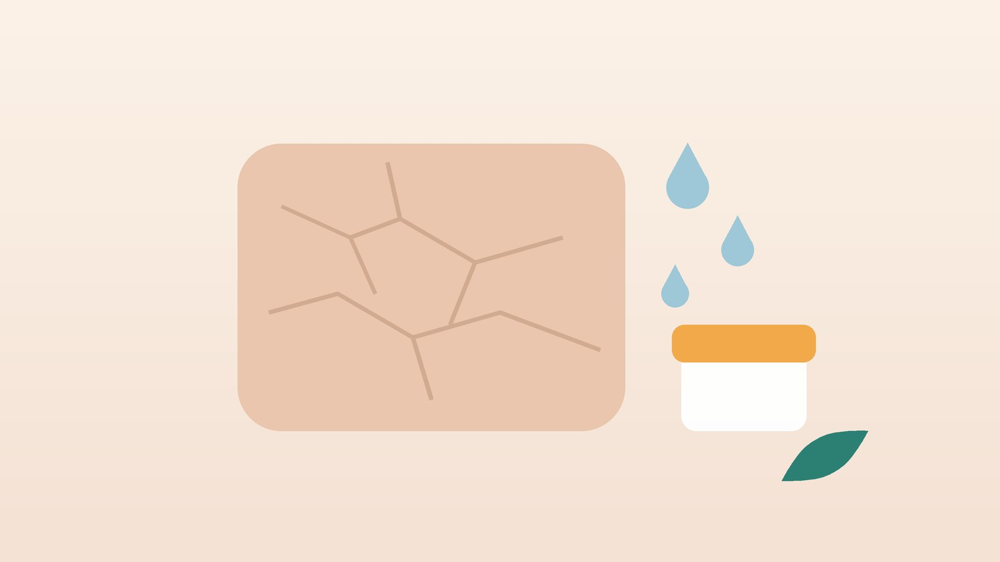

어르신이 밤마다 긁으신다면, 노인성 가려움의 원인 확인과 한방 관리

우리 부모님, 이런 모습인가요?
- 등, 정강이, 허리 둘레를 손이나 효자손으로 자주 긁으신다
- 겨울이 되거나 보일러를 켜면 가려움이 부쩍 심해진다
- 목욕탕에 다녀온 날이나 때를 민 다음 날 더 가려워하신다
- 밤에 긁느라 자주 깨시고 낮에 꾸벅꾸벅 조신다
- 최근 새 약을 드시기 시작했거나 약 가짓수가 늘었다
- 정강이 피부가 하얗게 일어나고 긁힌 줄 자국이 남아 있다
이 체크리스트는 진단 도구가 아닙니다. 물집, 노란 피부색, 체중 감소가 함께 있으면 아래 신호부터 확인하세요.
한방 치료보다 다른 진료가 먼저인 신호
- 팽팽한 물집이 팔다리 안쪽이나 배에 생긴다
- 몸 한쪽에 띠처럼 따끔거리며 가렵다가 붉은 반점이 올라온다
- 밤에 손가락 사이, 손목, 겨드랑이, 사타구니가 유독 가렵고 같이 사는 분도 가렵다
- 피부나 눈 흰자가 노래지고 소변 색이 진해졌다
- 살이 빠지고 밤에 식은땀이 나며 이유 없는 열이 있다
- 발진이 거의 없는데 온몸 가려움이 6주 넘게 이어진다
물집은 수포성 유사천포창일 수 있습니다. 어르신에게 많은 자가면역 피부병으로, 물집 전 몇 주~몇 달은 가려움과 붉은 반점만 있기도 해 피부과에서 조직 검사로 확인합니다. 일부 당뇨약(DPP-4 억제제)과의 관련도 보고되어 있어 약 목록을 챙겨 가세요. 몸 한쪽의 띠 모양 증상은 대상포진 초기일 수 있어 항바이러스제를 일찍 쓰도록 바로 진료를 받으세요. 요양시설이나 가족이 함께 가려우면 전염되는 옴을 피부과에서 확인하세요.
어르신 피부는 왜 이렇게 가려울까요?
나이가 들면 피부를 덮는 기름막이 얇아지고, 각질 사이에서 물을 붙드는 성분도 줄어듭니다. 피부 회복도 더뎌 작은 긁힘에도 가려움 신경이 쉽게 깨어납니다.
- 계절과 집 안 공기: 겨울철 보일러와 전기장판은 실내 습도를 크게 떨어뜨립니다.
- 목욕 습관: 뜨거운 탕에 오래 몸을 담그고 때를 미는 습관은 남아 있는 기름막까지 벗겨 냅니다.
- 드시는 약: 이뇨제처럼 몸의 수분을 빼는 약, 일부 혈압약·진통제·항생제 등이 가려움이나 건조를 부를 수 있습니다. 처방약은 담당 의사와 상의 없이 끊지 마시고, 약 목록을 들고 처방한 곳에 문의하세요.
- 몸속 질환: 만성 신장병, 담즙이 고이는 간 질환, 갑상선 기능 이상, 당뇨, 철결핍 빈혈, 림프종·진성적혈구증가증 같은 혈액 질환은 발진 없는 가려움으로 먼저 드러나기도 합니다.
유럽 만성 가려움 지침도 어르신의 오래가는 가려움은 원인이 여러 가지 겹치는 경우가 많다고 보고, 피부 상태와 약, 혈액 검사를 함께 살피도록 권합니다. 내과에서 신장·간 기능, 갑상선, 혈당, 빈혈과 철분 수치를 확인해 두세요.
한의학은 어르신 가려움을 어떻게 보나요?
한의학에서는 겉으로 뚜렷한 발진 없이 가려운 것을 소양(瘙癢)이라 했습니다. 노년기에는 몸의 혈과 진액이 서서히 줄어 살갗까지 충분히 적시지 못하고, 그 빈틈에 바람(風)이 일어 가렵다고 보았습니다.
여기에 잠이 얕아 마음이 편히 쉬지 못하면 가려움이 더 크게 느껴지고, 오래 긁은 자리는 피가 돌지 못해 거칠고 어두워진다고 해석합니다. 그래서 피부와 함께 잠, 소화, 기력을 살펴 혈과 진액을 채우는 데 중심을 둡니다.
나는 어떤 유형일까?
내과·피부과에서 다른 원인을 확인한 뒤 쓰는 한의학적 구분입니다.
1. 혈허풍조(血虛風燥) 메말라 가려운 유형
- 이런 분에게 많아요
- 마르고 입이 짧은 70대 이후 어르신
- 나타나는 모습
- 정강이·등이 하얗게 일어나고 겨울밤에 특히 가렵다
- 함께 오는 몸의 신호
- 얼굴빛이 창백함, 어지럼, 손톱이 잘 부러짐
- 진찰에서 보이는 모습
- 혀가 옅고 맥이 가늘음
- 치료 방향
- 혈을 보태 살갗을 적시는 방향 (당귀음자 계열)
- 오늘부터 해 볼 것
- 저녁 씻은 뒤 정강이와 등에 크림을 두껍게 펴 바르세요.
2. 간신음허(肝腎陰虛) 속이 마르고 화끈한 유형
- 이런 분에게 많아요
- 당뇨나 만성 질환을 오래 앓은 분
- 나타나는 모습
- 저녁만 되면 손발과 피부가 달아오르며 가렵다
- 함께 오는 몸의 신호
- 입 마름, 잠결 식은땀, 허리 시큰함
- 진찰에서 보이는 모습
- 혀가 붉고 마르며 설태가 얇음
- 치료 방향
- 진액을 채우고 속열을 내리는 방향 (육미지황탕 계열)
- 오늘부터 해 볼 것
- 전기장판은 잠들기 전에 끄고, 방 습도를 50% 안팎으로 맞추세요.
3. 심비양허(心脾兩虛) 잠 못 이뤄 더 가려운 유형
- 이런 분에게 많아요
- 걱정이 많고 잠이 얕은 분, 홀로 지내는 어르신
- 나타나는 모습
- 잠자리에 누우면 가려움이 시작되어 새벽까지 긁는다
- 함께 오는 몸의 신호
- 가슴 두근거림, 입맛 없음, 기운 없음
- 진찰에서 보이는 모습
- 혀가 옅고 맥이 약함
- 치료 방향
- 소화 기능과 마음을 함께 돌봐 잠을 돕는 방향 (귀비탕 계열)
- 오늘부터 해 볼 것
- 낮에 30분 햇볕을 쬐며 걷고, 낮잠은 짧게 주무세요.
4. 어혈(瘀血) 오래 긁어 거칠어진 유형
- 이런 분에게 많아요
- 몇 년째 같은 자리를 긁어 온 분
- 나타나는 모습
- 피부가 두꺼워지고 거무스름하게 변해 있다
- 함께 오는 몸의 신호
- 같은 자리의 따끔함, 다리 저림
- 진찰에서 보이는 모습
- 혀에 자줏빛 반점, 맥이 껄끄러움
- 치료 방향
- 피 순환을 도와 굳은 피부를 풀어 주는 방향 (도홍사물탕 계열)
- 오늘부터 해 볼 것
- 긁고 싶을 때는 차가운 수건을 대고 손바닥으로 눌러 주세요.
한의원에서는 어떻게 진찰하나요?
- 피부 살피기: 가려운 자리, 긁은 상처, 물집이나 띠 모양 발진, 손가락 사이 굴 모양 자국이 있는지 봅니다.
- 약 봉투 확인: 드시는 약을 모두 가져오시면 가려움과 관련 있을 만한 약이 있는지 함께 봅니다.
- 혈액 검사: 최근 검사 결과를 보고, 필요하면 원내 혈액 검사로 몸 상태를 살핍니다.
- 목욕·잠 습관: 목욕 온도와 때밀이, 보습제, 밤에 깨는 횟수를 여쭙니다.
- 맥·혀와 체질: 혈과 진액이 얼마나 부족한지, 잠과 소화 상태는 어떤지 나눕니다.
침·약침·한약 치료는 어떻게 하나요?
1. 침 치료
어르신의 얇은 피부를 생각해 가는 침으로 얕게 놓고, 긁어 상처 난 자리는 피합니다.
- 곡지(曲池): 팔을 굽혔을 때 팔꿈치 주름이 끝나는 바깥쪽 오목한 곳으로, 달아오르는 가려움에 씁니다.
- 혈해(血海): 무릎뼈 안쪽 위 모서리에서 허벅지 쪽으로 손가락 세 개 너비 올라간 곳입니다.
- 삼음교(三陰交): 안쪽 복사뼈에서 손가락 네 개 너비 위, 정강이뼈 뒤쪽 가장자리입니다.
- 신문(神門): 손목 안쪽 주름의 새끼손가락 쪽 끝으로, 잠이 얕을 때 더합니다.
피를 묽게 하는 약(항응고제·항혈소판제)을 드시면 알려 주세요. 멍이 덜 들도록 침의 수와 깊이를 조절합니다.
2. 약침
곡지나 혈해 같은 팔다리 혈자리에 체질에 맞는 약침을 아주 적은 양으로 놓습니다. 시술한 자리는 그날 때밀이를 하지 마세요.
3. 한약
유형에 맞춰 혈과 진액을 채우는 탕약을 위주로 씁니다. 오래된 가려움은 두세 달 이상 단계를 나눠 보는 경우가 많고, 노인성 가려움에 대한 한약 연구는 아직 규모가 작아 보습과 원인 치료를 함께 하는 것을 전제로 안내합니다. 어르신은 드시는 약이 많은 경우가 많아, 약 목록을 알려 주시면 확인해 처방합니다. 신장이나 간 질환 병력이 있다면 진료 때 꼭 알려 주세요. 확인 후 안전한 약재로 처방합니다. 한약은 원장이 원내 탕전실에서 약재 선별부터 달이는 과정까지 직접 관리하며, 10일분씩 처방해 복용 경과를 보고 약재 구성과 양을 조절합니다.

관리는 어떤 순서로 진행되나요?
- 원인 확인 물집·띠 모양 발진·옴이 의심되면 피부과, 발진 없는 가려움이 오래가면 내과 혈액 검사를 먼저 받습니다.
- 목욕·보습 바꾸기 첫 주부터 목욕 온도와 보습 순서를 바로잡습니다.
- 한방 치료 시작 침·약침과 탕약으로 가려움과 잠을 돌보며 밤에 깨는 횟수를 적어 둡니다.
- 겨울 대비 가라앉으면 치료 간격을 늘리고 겨울 전에 보습 습관을 다시 점검합니다.
기간은 가려움이 이어진 기간, 함께 있는 질환, 드시는 약에 따라 달라지며 진찰 후 안내합니다.
집에서 하는 가려움 관리
- 목욕은 짧고 미지근하게: 탕 목욕은 주 1~2회, 10분 안쪽으로 하고 물은 손등에 따뜻한 정도로 맞추세요. 비누는 겨드랑이·사타구니·발에만 쓰세요.
- 때밀이는 그만: 때처럼 밀려 나오는 것은 대부분 피부를 지켜 주는 각질입니다. 손이나 부드러운 수건으로만 씻으세요.
- 보습은 물기 있을 때: 수건으로 톡톡 두드린 뒤 촉촉할 때 향 없는 크림을 바르세요. 잘 마르는 정강이·등은 하루 두 번, 등은 가족이 도와주세요.
- 방 공기와 이불: 가습기나 젖은 빨래로 습도를 40~60%로 맞추고, 전기장판 온도를 낮추세요. 속옷과 잠옷은 부드러운 면으로 고르세요.
- 밤에 긁지 않게: 손톱을 짧게 다듬고, 밤에는 얇은 면장갑을 끼면 자다가 긁어 생기는 상처가 줄어듭니다.
다른 진료가 함께 필요한 경우
- 가려움으로 몇 주째 잠을 못 주무시면 증상이 가벼운 경우 한약 치료를 중심으로 관리하기도 하지만, 우울이 깊어 보이면 정신건강의학과 치료를 함께 받으세요.
- 투석 중이거나 신장 기능이 많이 떨어진 분의 가려움은 신장내과와 함께 관리하세요.
- 긁은 자리가 붓고 진물이 나며 열이 나면 세균 감염일 수 있어 바로 진료를 받으세요.
- 날개뼈 안쪽 한 자리나 팔 바깥쪽만 오래 가렵고 저리면 목·등 신경 문제일 수 있어 확인이 필요합니다.
자주 묻는 질문 Q&A
- Q1. 나이 들면 원래 가려운 거 아닌가요?
- 흔하지만 참고 지낼 일은 아닙니다. 약이나 몸속 질환이 원인일 수 있어 한 번은 확인하세요.
- Q2. 때를 안 밀면 찝찝해서요.
- 손으로 비누 거품을 내 살살 씻어도 충분히 깨끗해집니다. 때밀이만 줄여도 가려움이 덜해지는 경우가 많습니다.
- Q3. 어떤 보습제가 좋은가요?
- 향이 없는 크림이나 연고 타입이 오래가며, 값보다 넉넉히 자주 바르는 것이 중요합니다.
- Q4. 피부과 연고를 바르고 있는데 한약을 함께 먹어도 되나요?
- 함께 쓰셔도 됩니다. 쓰시는 연고와 드시는 약을 알려 주시면 확인해 처방합니다.
- Q5. 요양원에 계신 어머니가 밤마다 가렵다고 하세요.
- 옴 확인을 먼저 받으세요. 옴이면 같은 방 분들과 함께 치료하고 침구를 세탁해야 합니다.
- Q6. 가려움약(항히스타민제)을 먹으면 자꾸 졸려요.
- 졸음과 어지럼은 낙상으로 이어질 수 있어, 졸림이 적은 약으로 바꿀 수 있는지 처방한 의사에게 물어보세요.
- Q7. 손이 안 닿는 등이 가려운데 효자손을 써도 되나요?
- 세게 긁으면 상처가 나 더 가려워집니다. 차가운 수건을 대거나 보습제를 바르는 쪽이 낫습니다.
- Q8. 집에서 지압해 드릴 곳이 있을까요?
- 팔꿈치 바깥 주름 끝의 곡지혈을 엄지로 5초씩 지그시 눌러 보세요. 물집이나 띠 모양 발진이 생기면 피부과로 가세요.
문원열 대표원장한의사 · 365스마일한의원
임상 경력 15년, 인천 서구 가정동에서 개원 후 10년째 진료하고 있으며, FCST 턱관절학회·연부조직학회·침도학회 등에서 활동합니다. 아픈 곳만이 아니라 증상의 원인을 찾아 진료합니다.
진료 안내
- 진료시간
- 평일 09:00~20:00 (점심시간 13:00~14:00, 접수 마감 19:30)
토·일·공휴일 09:00~15:00 (접수 마감 14:30) - 주소
- 인천광역시 서구 가경주로 46, 2층 (가정동)
인천2호선 가정중앙시장역 인근
영상으로 길 안내 보기 → - 주차
- 한의원 건물 바로 앞 1층 도원주차장, 또는 도보 5분 거리 가정주차장
- 예약
- 예약 바로가기 또는 전화 예약
진료시간은 사정에 따라 바뀔 수 있으니 방문 전 전화로 확인해 주세요.
함께 읽으면 좋은 칼럼
건강 칼럼 전체 보기 →


참고 자료
- Weisshaar E, et al. European S2k Guideline on Chronic Pruritus. Acta Dermato-Venereologica, 2019
- Schmidt E, Zillikens D. Pemphigoid diseases. Lancet, 2013
- 질병관리청 국가건강정보포털 — 원문
※ 이 글은 일반적인 건강 정보이며, 개인의 상태에 따라 치료 방법과 결과는 다를 수 있습니다. 정확한 진단과 치료는 진료를 통해 결정됩니다. 침·약침 시술 후 드물게 멍, 통증 등이 생길 수 있습니다.